Home | Background | Experiment | Results | Conclusion | Bibliography
Abstract | Raw Data | Photos | Graph
This investigation aimed to determine how varying the slit separation in a double-slit experiment affects the number of visible fringes produced and the width of the pattern on a screen. The independent variable was slit separation (d), tested at values of 0.5, 1.0, 1.5, 2.0, 2.5 and 3.0 mm, whilst the dependent variable was the total pattern width W (cm), measured from printed photographs using a ruler. The number of visible bright fringes (n) was also counted from each photograph. It was hypothesised that as slit separation (d) increases, fringe spacing will decrease, producing a narrower pattern with more closely spaced fringes.
A red laser was directed through double-slit slides with separations ranging from 0.5 mm to 3.0 mm, with a white screen placed exactly 2.00 m away. Six photographs of the fringe pattern were taken per slit separation, printed and measured using the ruler as a scale reference. Results were averaged across the six trials to reduce the effect of random error.
Observable, measurable interference patterns were obtained only for slit separations of 0.5 mm and 1.0 mm. For d = 0.5 mm, the average measured pattern width was 4.85 cm, compared to the theoretical value of 4.86 cm, a difference of just 0.2%. For d = 1.0 mm, the average was 3.93 cm against a theoretical value of 3.16 cm, giving a percentage error of 24.4%. Slit separations of 1.5 mm and above did not produce any visible pattern. These findings support the hypothesis and confirm the inverse relationship between slit separation and fringe spacing, consistent with the predictions of wave theory, though practical limitations prevented direct measurement at larger separations.
For each trial, the number of visible bright fringes (n) was counted from the photograph, and the total pattern width (W) was measured in cm using the ruler as a scale reference. Each slit separation was tested six times and averaged. Values marked * are outliers.
| d (mm) | Measurement | T1 | T2 | T3 | T4 | T5 | T6 | Average | Theoretical W (cm) |
|---|---|---|---|---|---|---|---|---|---|
| 0.5 | Fringes visible (n) | 22 | 14* | 22 | 18 | 22 | 20 | 19.7 | — |
| Pattern width W (cm) | 5.2 | 4.7 | 5.0 | 4.9 | 4.8 | 4.5 | 4.85 | 4.86 | |
| 1.0 | Fringes visible (n) | 23 | 25 | 26 | 26 | 27 | 25 | 25.3 | — |
| Pattern width W (cm) | 3.4 | 3.3 | 4.3 | 3.6 | 4.2 | 4.8 | 3.93 | 3.16 | |
| 1.5 | Fringes too closely spaced to photograph and measure reliably (theoretical y = 0.87 mm) | ||||||||
| 2.0 | Fringes too closely spaced to photograph and measure reliably (theoretical y = 0.65 mm) | ||||||||
| 2.5 | Fringes too closely spaced to photograph and measure reliably (theoretical y = 0.52 mm) | ||||||||
| 3.0 | Fringes too closely spaced to photograph and measure reliably (theoretical y = 0.43 mm) | ||||||||
| d = 0.5 mm, Trials 1 to 6 | |||||
|---|---|---|---|---|---|
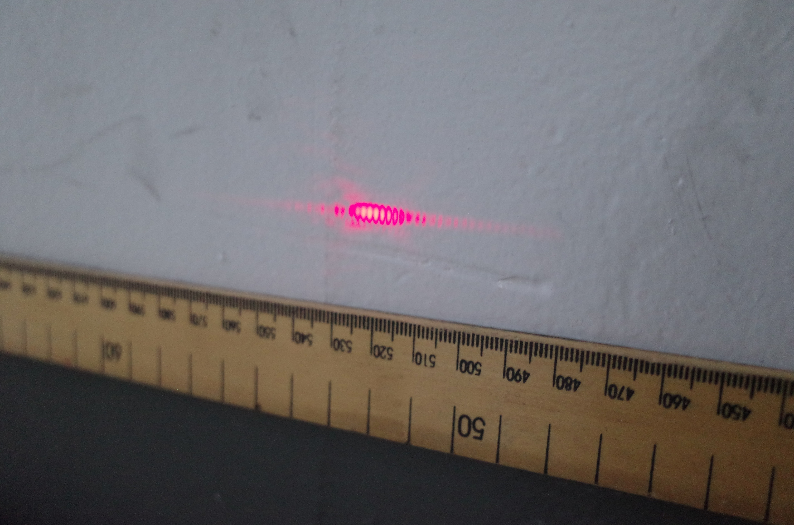 Trial 1 |
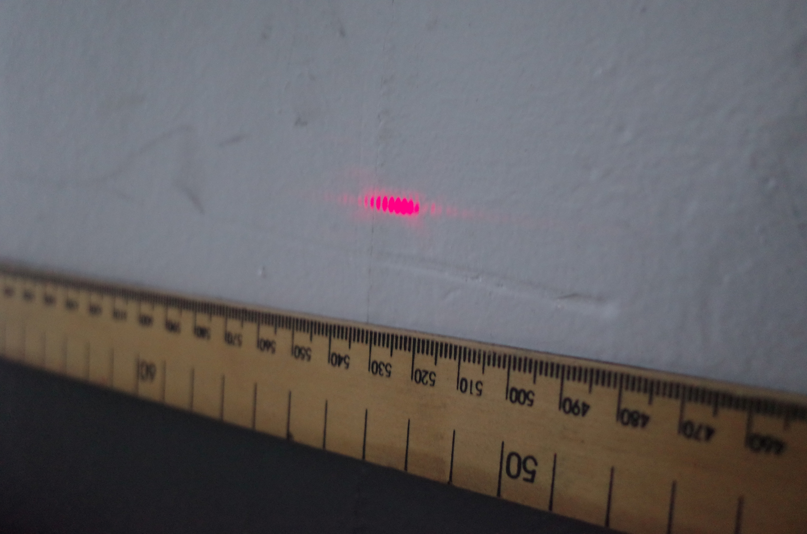 Trial 2 |
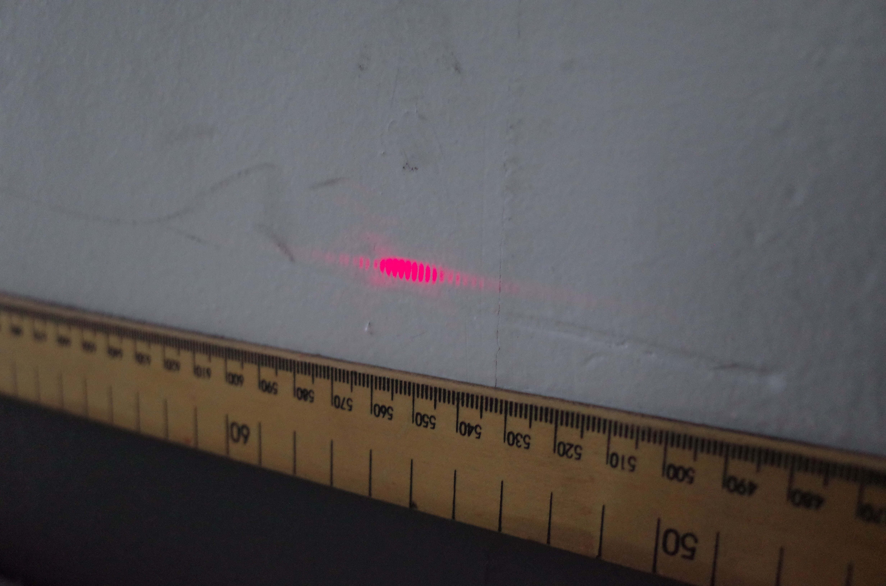 Trial 3 |
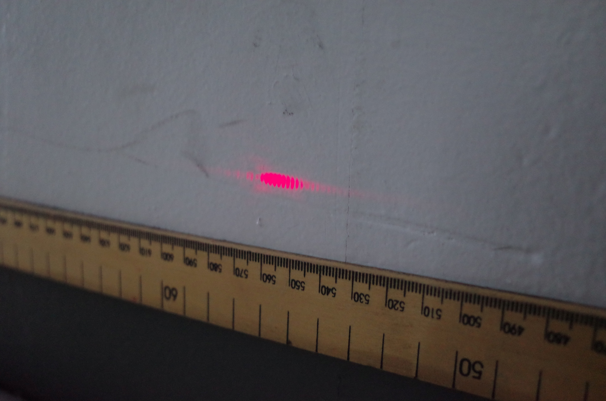 Trial 4 |
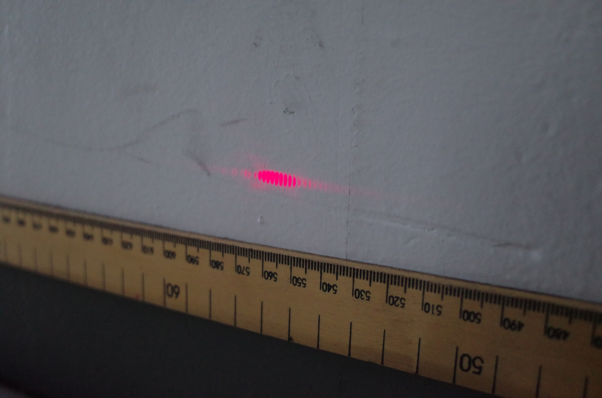 Trial 5 |
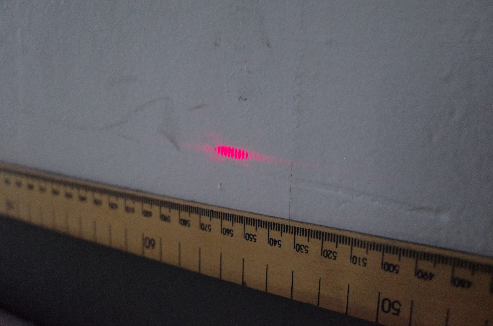 Trial 6 |
| d = 1.0 mm, Trials 1 to 6 | |||||
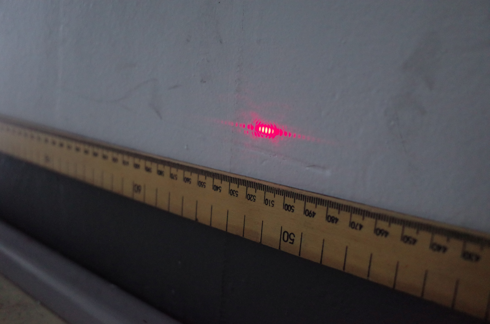 Trial 1 |
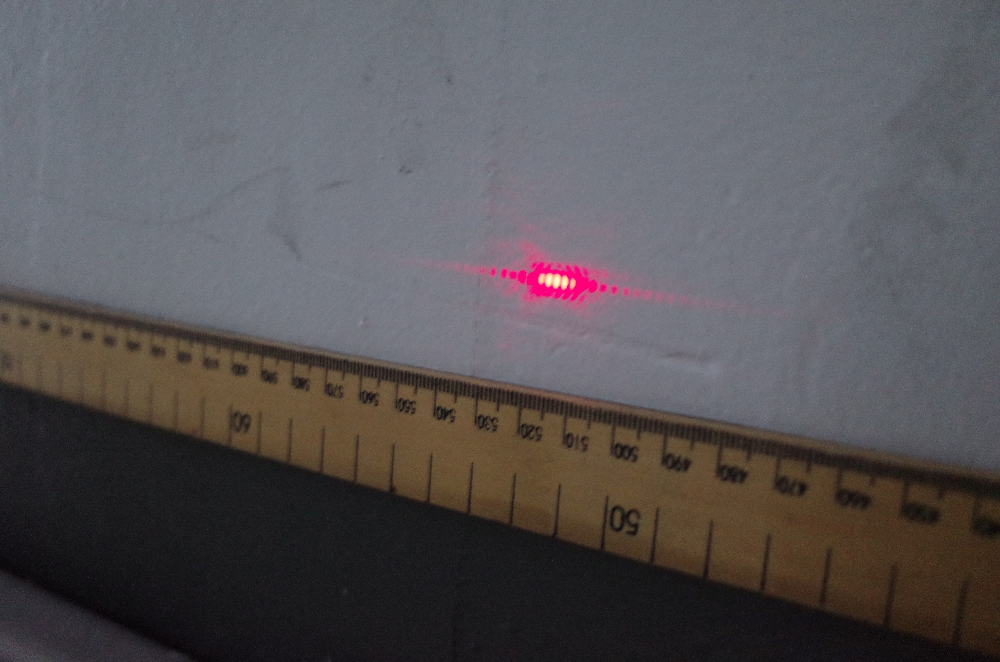 Trial 2 |
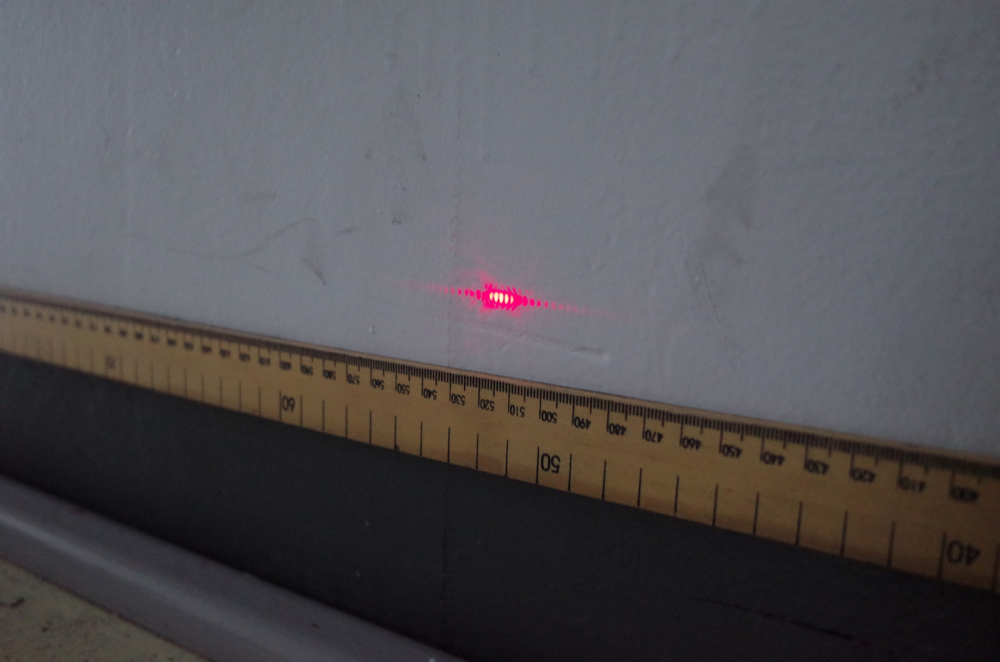 Trial 3 |
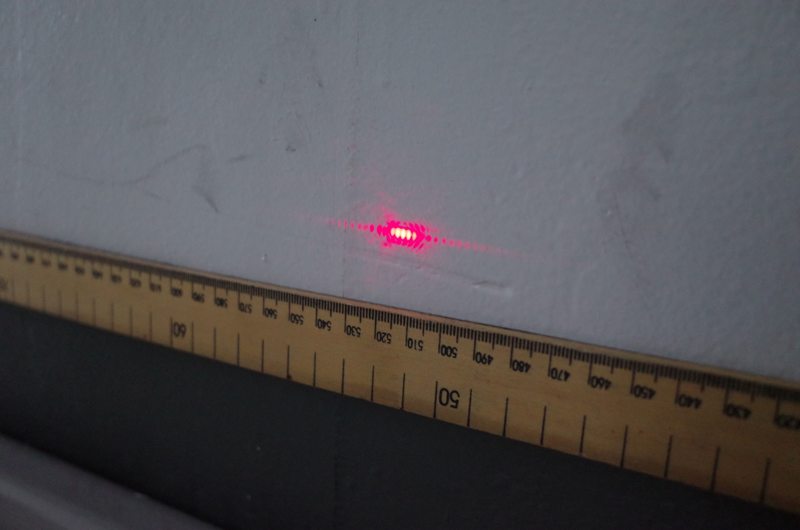 Trial 4 |
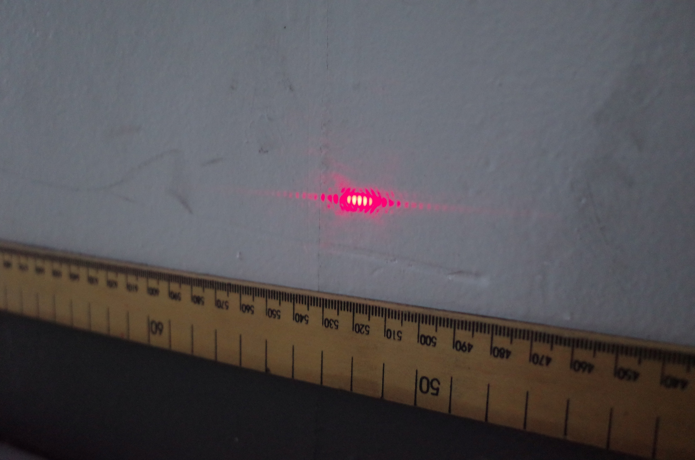 Trial 5 |
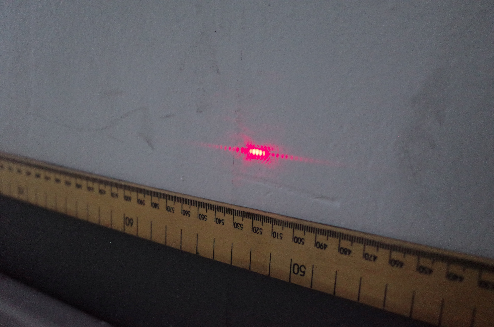 Trial 6 |
| Slit separations of 1.5, 2.0, 2.5 and 3.0 mm produced fringes too closely spaced to photograph and measure reliably. This is consistent with y = λL / d: as d increases, y becomes too small to resolve at 2.00 m. | |||||
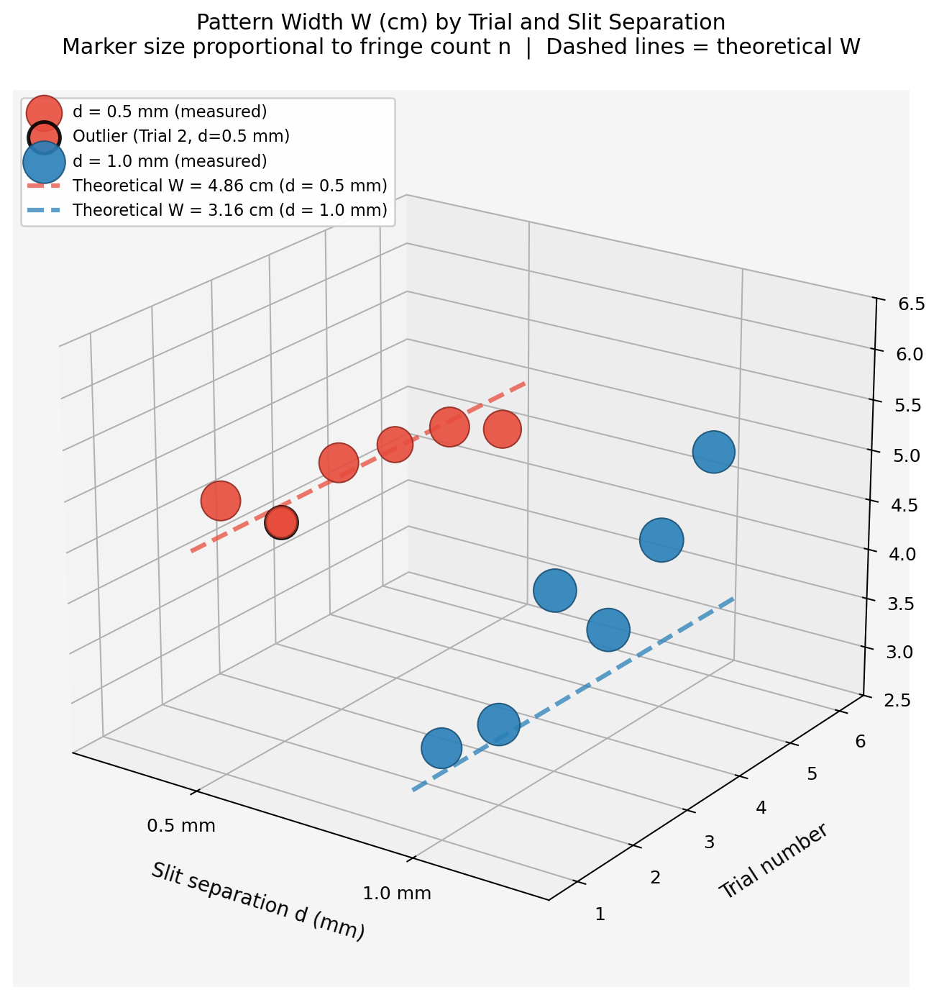
This graph shows the connection between slit separation and the width of the interference pattern in several trials of a double-slit experiment. The data points for two slit separations, 0.5 mm and 1.0 mm, are plotted along with theoretical predictions. The results indicate that a smaller slit separation results in a wider interference pattern, which follows the inverse relationship between pattern width and slit distance. The experimental data for 0.5 mm closely matches the theoretical values, showing high accuracy. In contrast, the 1.0 mm data varies more, pointing to greater uncertainty in the experiment. One trial has an outlier, likely due to a measurement error. Overall, the data supports the theoretical model.
Home | Background | Experiment | Results | Conclusion | Bibliography